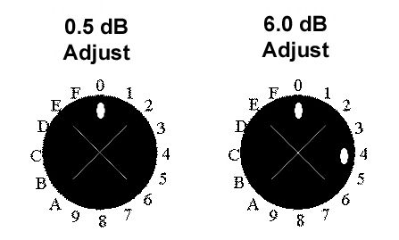

Operating Documentation
Direction 5440000, Rev# 5
Signa HDxt Service Methods
Module Version 5.0, Version Date 12/11/09
Operating Documentation |
| Required Persons | Preliminary Reqs | Procedure | Finalization |
|---|---|---|---|
| 1 | Not Applicable | 2 hours | Not Applicable |
This procedure should be followed after installation of the Multi Nuclear Spectroscopy (MNS) Amplifier to calibrate either the 2kW CPC Amplifier for 1.5T or the 4kW CPC (or 8kW AMT) Amplifier for 3.0T. The procedure can also be used to calibrate the 4kW Amp cabinet used in 2kW MNS HDx systems. This cabinet has a pre-installed attenuator connected to the RF input of the amplifier.
| Item | Qty | Effectivity | Part# | Manufacturer | |
|---|---|---|---|---|---|
| RF Power Measurement Kit (Calibrate using Power Meter method.) | 1 | - | 46-317724G1 or G2 | - | |
| 50 ohm Dummy Load | 1 | - | 2372868 | - | |
| Small Phillips Screwdriver (Size #0 or #00) with at least 2 inch length | 1 | - | - | - | |
| Composed of : | |||||
| Oscilloscope with 50 ohm impedance and >150 MHz of bandwidth (Calibrate using Oscilloscope method.) | 1 | - | - | - | |
| RG214 Cable | 1 | - | - | - | |
| BNC Cable | 1 | - | - | - | |
| 30 dB High-Power Attenuator or 40 dB Power Coupler (If the 40 dB Power Coupler is used, the 30 dB Attenuator plus 50 ohm Dummy Load must also be used.) | 1 | - | - | - | |
| 40 dB Attenuator or 30 dB Attenuator plus 50 ohm Dummy Load (If the 40 dB Power Coupler is used, the 30 dB Attenuator plus 50 ohm Dummy Load must also be used.) | 1 | - | - | - | |
| ||||
| FATAL ELECTRIC SHOCK HAZARD! | ||||
| FATAL ELECTRICAL VOLTAGES THROUGHOUT THE MNS CABINET. | ||||
| TO PREVENT FATAL ELECTRIC SHOCK, MAKE SURE THE MNS RF AMPLIFIER IS DISABLED WHEN CONFIGURING THE CALIBRATION TOOLS. |
| ||||
| PERSONAL INJURY! | ||||
| POSSIBLE RF BURN WHEN DISCONNECTING HELIAX CABLES FROM THE RF AMPLIFIER. | ||||
| VERIFY THAT THE SCAN DESKTOP ICON DISPLAYS THE “IDLE” MESSAGE AND THE UCERD SWITCH IS IN THE "DISABLE" POSITION. |
| ||||
| Property damage to the coils could result if not removed from the magnet bore during body scans. Verify that the scan desktop icon displays the “Idle” message and the UCERD Switch is in the "Disable" position. | ||||
| ||||
| If the RF amplifier is operated with an improper load connected to its output, permanent damage to the amplifier could result. | ||||
Disabling T/R Drive error condition:
Verify the system is idle and all coils have been removed from the magnet bore.
Remove the front cover of the RF Accessories Cabinet.
On the front of the driver module, set the T/R Switch (shown inIllustration 1) to Disable. This will disable T/R fault reporting.
| NOTE: | HV, DD, and MC should remain set to “Enable”. |
Illustration 1: Driver Module Switch

Disconnect the T/R Bias Cable from the RF Amplifier (J11 on AMT Amplifier or J14 on CPC Amplifier).
Set up the measurement system according to one of the three diagrams shown in Illustration 2.
Illustration 2: Schematic of Different Setups for Calibrating MNS Amplifier

Power Attenuator Method:
Using an RG214 Cable, connect the RF output of the amplifier to the input of a high-power attenuator.
Connect additional attenuation to the output of the high-power attenuator until a total of 65 to 70 dB of attenuation is attained.
Using a BNC Cable, connect the output of the attenuators to the input of the oscilloscope.
Set the oscilloscope to full bandwidth (>150 MHz) and direct current of 50-ohm input impedance.
Coupler Method:
Connect the RF output of the amplifier to the input of power coupler.
Connect the output of the power coupler to a suitable 50-ohm Dummy Load.
Connect additional attenuation to the coupled output of the power coupler until at total of 65 to 70 dB of attenuation is attained.
Connect the output of the attenuators to the input of the oscilloscope.
Set the oscilloscope to full bandwidth (>150 MHz) and direct current of 50 ohm input impedance.
Set up the scan parameters according to Table 1.
Table 1: Scan Parameters
| Step | Action |
| 1 | Click on [New Pt]. |
| 2 | ID: Type geservice, press <Enter>. |
| 4 | Weight: Enter 300 lbs. |
| 5 | Set Patient Protocols to Service |
| 6 | Scroll through the protocol field and find the protocol: X.xT apb cal. |
| 7 | Select Series 2, Head. |
| 8 | Click [Accept]. |
| 9 | Set Landmark on the head area of the table. |
| 10 | Click [Save Series]. |
| 11 | Right click the mouse and select Research Options; select Display CVs from the drop-down menu. |
| 12 | Set the value of calmode to 5 and press <Enter>. |
| 13 | Set the value of mns_xmit to 1 (for MNS) and press <Enter>. |
| 14 | Set the value of spec_nuc to 31 (for Phosphorous 31) and press <Enter>. |
| 15 | Select [Setup Params], and set the TG to 0; click [Done]. |
| 16 | Click on [Manual Prescan]. |
| 17 | Increase the TG to 50. If the scan stops due to a peak power fault, reduce the TG to 0, and continue with calibrations. |
Calibrate the Amplifier.
For CPC 2kW 1.5T, 4kW 3.0T, and 4kW RF amplifier cabinet with attenuator calibration:
The manual prescan should already be running. Measure the peak envelope power using the oscilloscope (power attenuator, coupler or power meter method).
For ease of calculation, an Excel tool is available. Enter the measurement data into the respective calculator.
If the gain adjustment is positive, turn the amplifier gain potentiometer adjustment clockwise. (The amplifier gain potentiometer is located at the back of the CPC Amplifier.)
| NOTE: | The gain of the CPC Amplifier may be adjusted while the scan continues to run. It is normal for the display on the front of the amplifier to fluctuate ±10% of actual power due to slight differences in oscilloscopes, attenuators and amplifiers. |
Increase the TG to 200. When 2kW or 4kW is measured at TG = 200 (depending on amp calibrated), the amplifier is successfully calibrated. The 4kW amplifier with pre-installed attenuator will be calibrated to 2kW.
If the amplifier trips before achieving the desired 2kW or 4kW level:
Back off the gain pot about 1/8 of a turn.
Allow the amplifier time to recover.
Restart manual prescan.
Select [Scan TR].
Repeat this procedure until the amp is operating at its peak output of TG = 200.
To know what peak-to-peak value to look for, see Illustration 3.
Illustration 3: dB Lookup Table

For AMT 8kW 3.0T calibration:
Remove the front cover of the AMT Amplifier (takes about 8 minutes as there are 50+ screws to remove). Locate two holes for gross (6.0 dB) and fine (0.5 dB) adjustments as pictured in Illustration 4 and Illustration 5.
| NOTE: | These two holes may be covered with an external screw. If this is the case, simply remove the screw so that the amplifier looks like the one in Illustration 4. |
Illustration 4: AMT Amplifier with Covers Removed (Indicators Point to Adjustment Points)

Illustration 5: AMT Amplifier Detail of dB Adjustment

| NOTE: | If turning one dB adjustment knob counterclockwise, replace
all references to “clockwise” with “counterclockwise”
in the following explanation.
|
The manual prescan should already be running. Measure the peak envelope power using the oscilloscope (power attenuator, coupler or power meter method).
Enter the measurement data into the respective calculator.
[STOP] or [PAUSE] the manual prescan before adjusting the gain controls on the AMT Amplifier.
If the calculator specifies an adjustment for the 6.0 dB control, insert a long Phillips screwdriver (size #0 or #00) into the 6.0 dB adjuster knob, and turn the control clockwise the specified number of clicks.
Restart the manual prescan and measure the power. Use the calculator provided to recalculate the remaining gain adjustment.
[STOP] or [PAUSE] the manual prescan before adjusting the gain controls on the AMT Amplifier.
Insert a Phillips screwdriver into the 0.5 dB control, and turn the specified number of turns. If the gain of the system jumps by about 8.0 dB when adjusting this control, it was rotated past its zero point as per Illustration 5. Adjust as follows:
If decreasing gain: Turn four more clockwise clicks on the 0.5 dB control and one clockwise click on the 6.0 dB control.
If increasing gain: Turn four more clicks counterclockwise on the 0.5 dB control and one counterclockwise click on the 6.0 dB control.
Once the calculated gain adjustment is almost zero (0), set the TG to 200 and verify full power output without peak power faults. It may be necessary to add one additional clockwise click of the 0.5 dB control if the system is sensitive to faults at the 8kW peak power level.
When 8kW is measured on the oscilloscope at TG = 200, the amplifier is correctly calibrated.
| NOTE: | To know what peak-to-peak value to look for, refer to Illustration 3. |
Verify that scanner is “Idle” and turn off the RF Enable.
If Power Meter method was used, disconnect the RF Watt Sensor from the RF Output connection.
Connect the original Output Cable to the MNS RF Amplifier and tighten the connector.
Perform remaining cleanup procedures.
Turn on the RF Enable.
Reset the TPS to put the amp back into a known state.
Perform a goodbye scan.